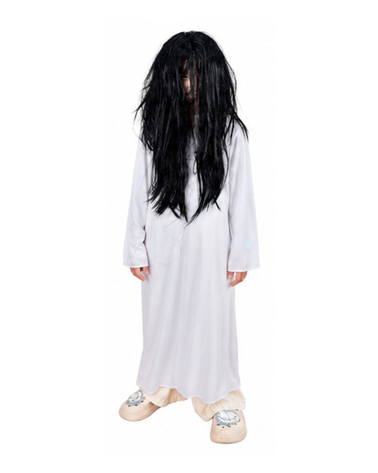
角色 01
白衣長髮女鬼
化妝重點
臉色偏白、眼周灰黑陰影；嘴唇降彩度，可加淡淡血痕；長髮遮臉是造型重點。


臉色偏白、眼周灰黑陰影；嘴唇降彩度，可加淡淡血痕；長髮遮臉是造型重點。
眉型加粗、眼窩加深；可增加鬍影或臉部陰影，呈現威嚴古裝感。
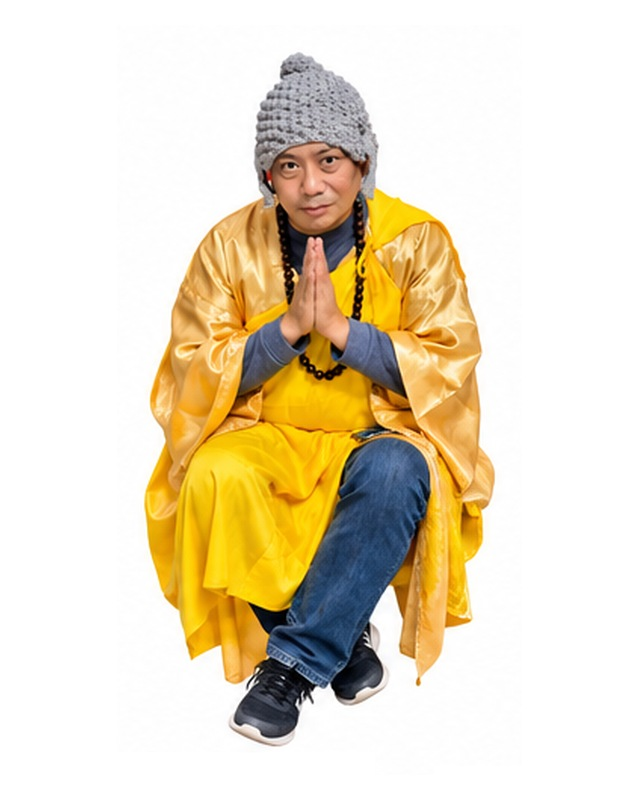
底妝偏暖；眉眼自然加深，臉部略做陰影；可搭配念珠，妝感以沉穩為主。
臉色偏白、眼周灰黑；嘴角或眼下可加紅色血痕；額前符咒為辨識重點。
全臉白底；眼圈黑色、眉眼誇張，唇色淡或黑；帽子文字保持清楚。
黑色臉部底妝搭配白色眼口區；加強高對比輪廓，避免細節糊成一片。
底妝乾淨，眼尾紅色暈染；眉型俐落、唇色偏紅；可加眼下陰影增加神秘感。
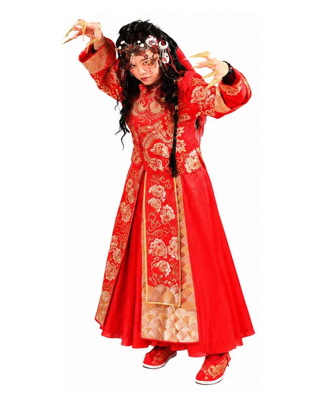
白皙底妝、紅黑眼妝；眼下或臉頰加血淚／裂痕，紅唇與華麗頭飾是重點。
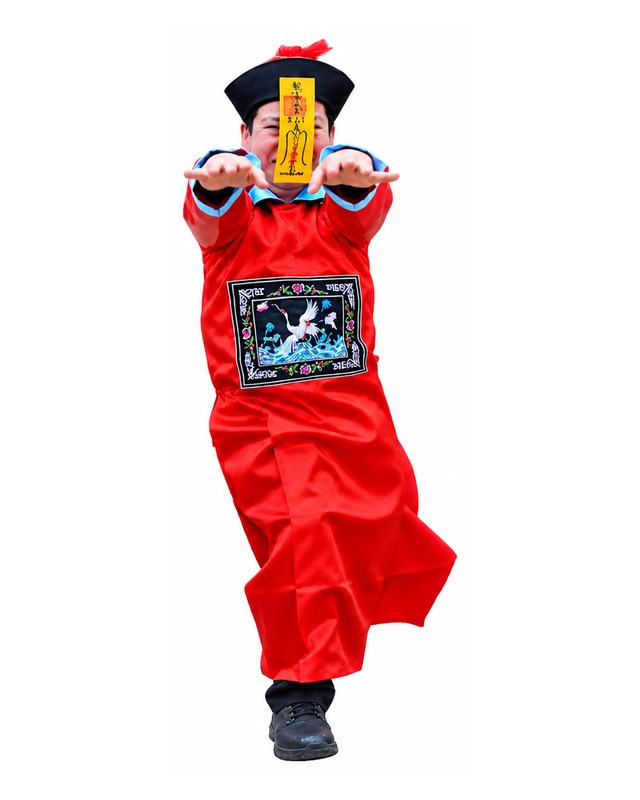
臉色偏白；眼周灰黑、腮部淡紅；額前符咒為主視覺，可加嘴角血痕。
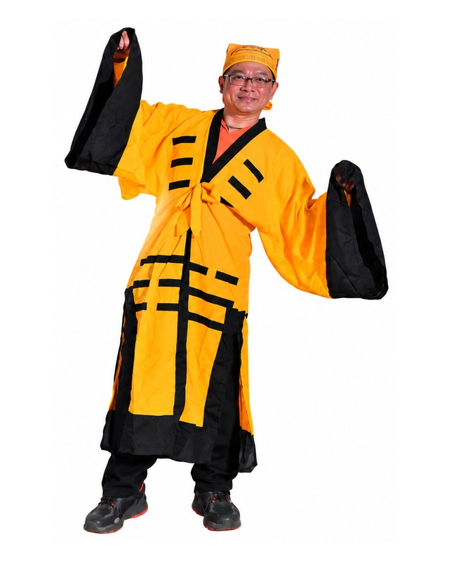
自然底妝加深眉眼；額頭／臉頰可加入符咒或道術紋樣，整體以黃黑服裝為視覺焦點。
臉部偏白，眼圈與鼻側加黑灰陰影；雙頰紅暈做戲劇化效果，搭配黑帽與黑袍。
底妝自然偏白，眉眼以灰棕色加深；眼下可加入淡淡陰影營造幽冥感，唇色降低彩度。搭配灰黑古裝與頭巾，整體以沉穩神秘感為主。
底妝清透自然，眉型細緻柔和；眼妝以棕灰色拉長眼尾，唇色選豆沙紅或復古紅，呼應水墨旗袍的典雅感。
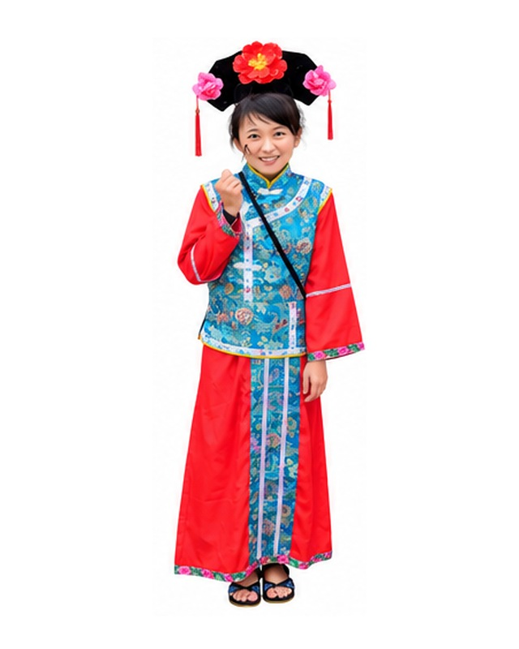
底妝乾淨明亮；眼妝以紅／桃色點綴，唇色鮮明；重點是古典髮飾與精緻感。
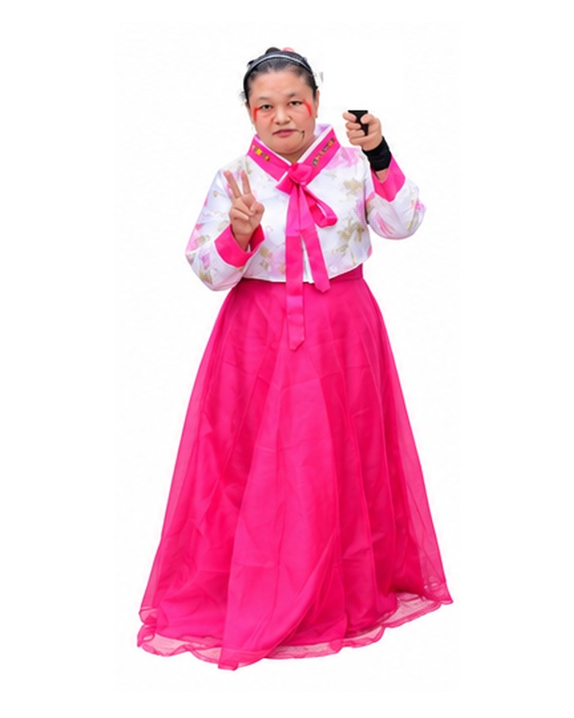
底妝自然；眉眼稍加深、腮紅偏紅；可在眼下加入疲憊或微驚悚感，保留韓服亮色主體。
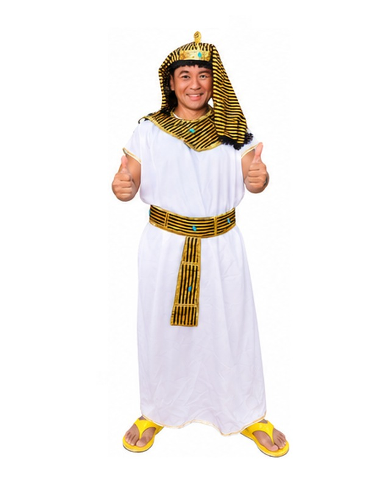
眼線向外延伸並加粗，強調埃及式眼妝；古銅修容、眉型俐落，搭配金黑頭飾。
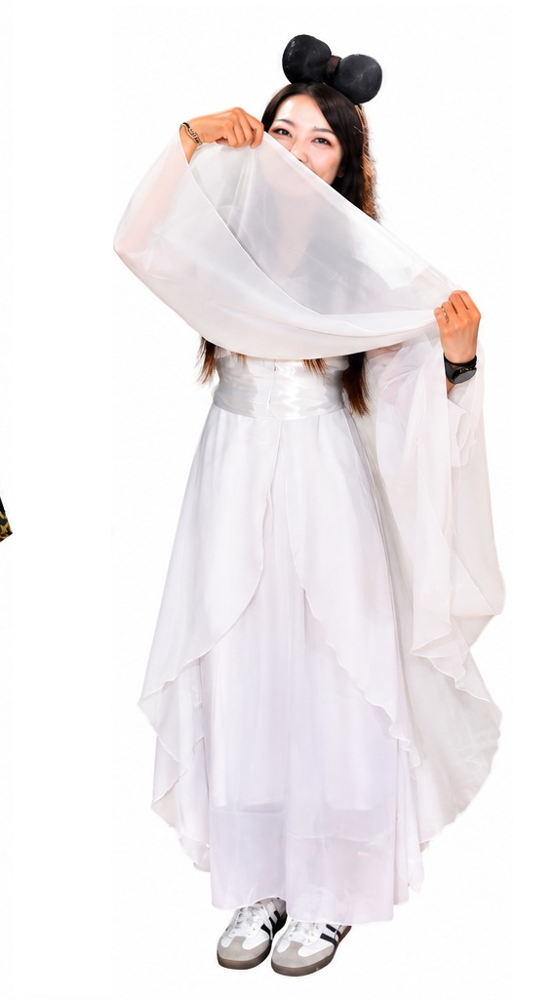
底妝清透偏白，眼妝以粉色、淡紅色柔和暈染；腮紅集中眼下，唇色淡紅，可加入少量亮粉營造飄逸仙氣。
底妝自然乾淨，眉型稍加深並修長；眼下可淡淡加灰棕陰影，唇色降低彩度，搭配方巾帽與卷軸呈現古代書生感。
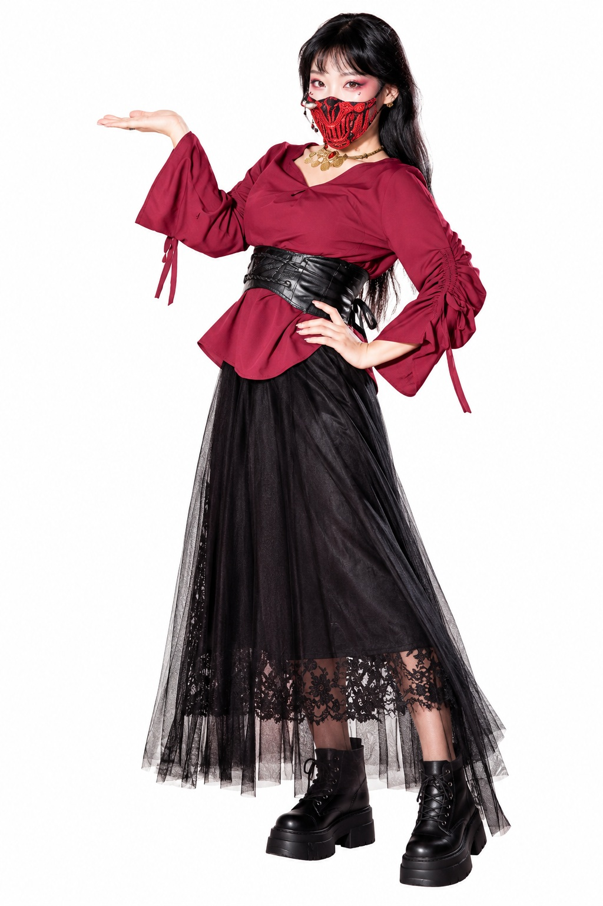
眼妝以紅黑色暈染並拉長眼尾，眉型俐落；搭配金色飾品與紅黑面紗，可在眼下加入亮片或細鑽增加異域感。
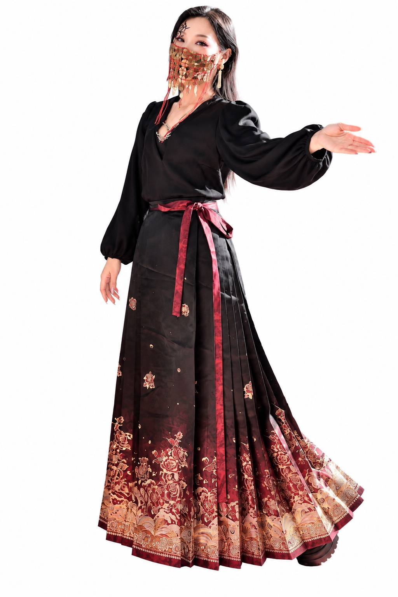
眼線加粗並向外延伸，眼窩以黑金色暈染；額頭可加黑色圖騰，搭配金紅面紗與金屬飾品，營造神秘華麗感。
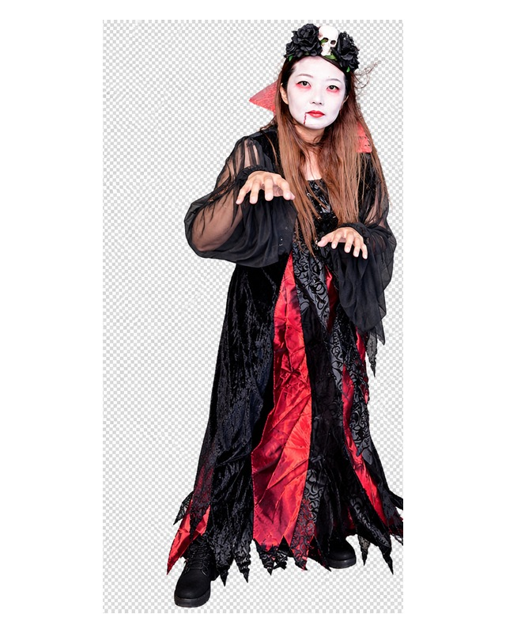
底妝偏白；眼周紅黑煙燻、紅唇；嘴角加細血痕，搭配黑色花冠與骷髏飾品。
底妝偏白、眼窩深色煙燻；唇色暗紅，眼下加陰影；十字與黑白服裝保持乾淨對比。
眼妝加深並向外拉長；可在眼角畫蜘蛛網細線，唇色深紅或黑紅，呼應胸前蜘蛛圖案。
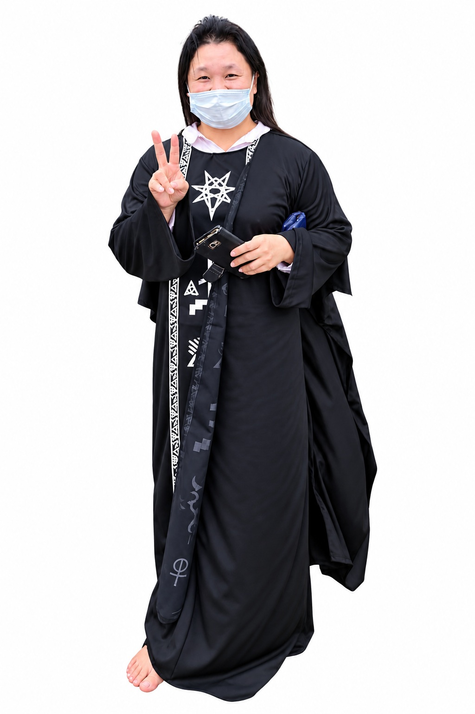
建議取下口罩後以偏白底妝打底；眼窩加深黑灰煙燻，眉尾拉長，可在眼下加入暗紅或紫色陰影，強化神秘邪氣感。
眼妝以黑金或棕黑色拉長眼尾，眉峰加強；唇色可用深紅或黑紅，搭配額頭或眼尾金色紋樣，呼應黑金服裝與角飾。
以黑白骷髏面具為主視覺；若改用彩妝，可用白底搭配黑色眼窩、鼻骨與牙齒線條，紅色細節呼應披風領口。
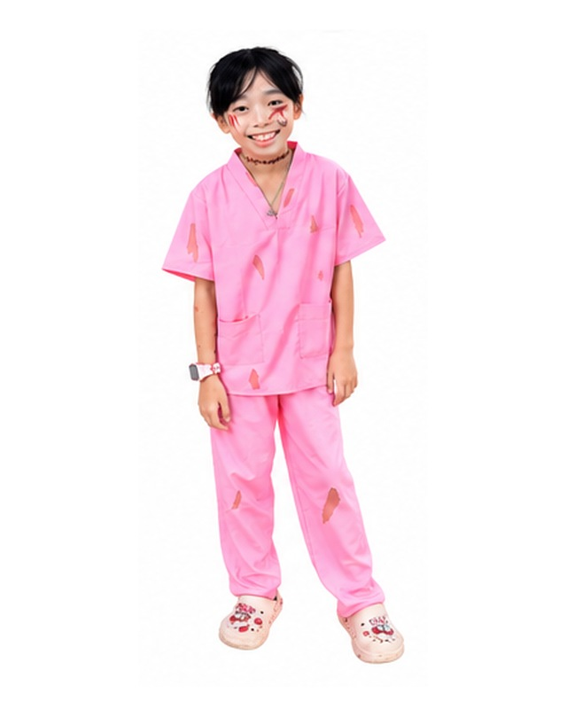
眼下紅黑暈染、臉頰做擦傷與裂痕；嘴角可加少量血漬，搭配衣服破損妝。
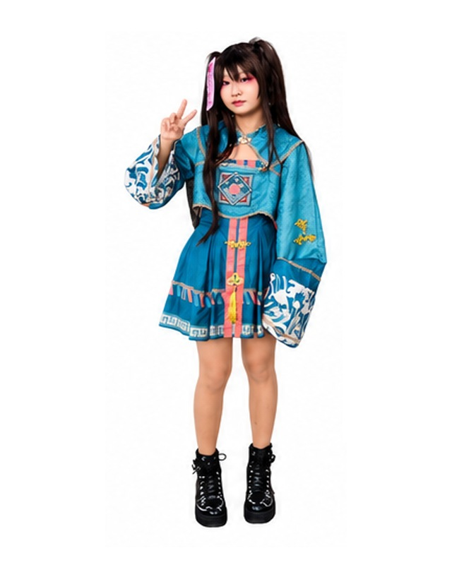
眼尾以紅色或粉紅色暈染；腮紅集中眼下，唇色偏紅；可加入少量圖騰或額飾。
白底妝、眼周黑紅暈染；鼻頭紅色，嘴部做誇張裂嘴或尖牙效果。
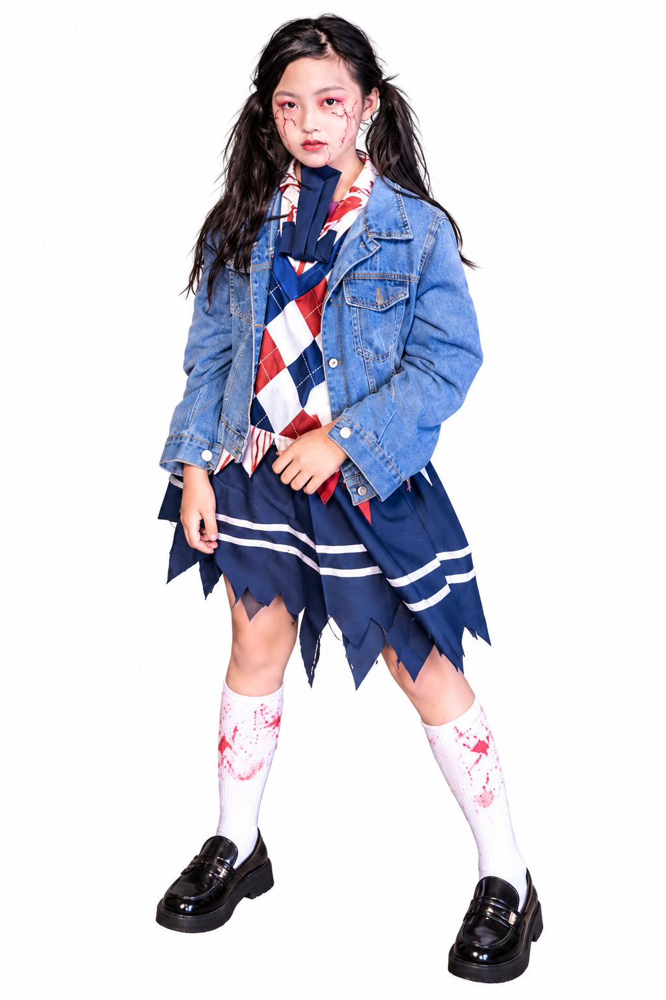
臉色偏白灰；眼下紅黑暈染，臉頰畫血管／裂痕；制服與襪子可搭配少量血漬。